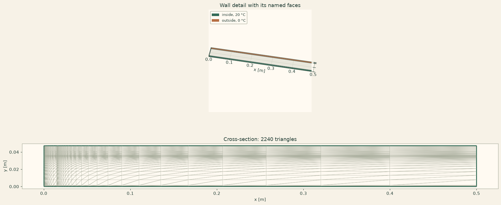

Docs › Examples › Thermal bridge: composite wall (ISO 10211 case 2)
Building physics · 2D
Thermal bridge: composite wall (ISO 10211 case 2)
Test reference case 2 of EN ISO 10211: an aluminium profile and a wooden batten bridging the insulation of a wall.
Run locally with OneSimulation. The example downloads are free. Running them requires an activated runtime. Runtime Alpha 0.2.1a7 · CPython 3.13 on macOS (Apple Silicon), Ubuntu 22.04 (x86-64), and Windows x64. Installation and activation · View pilot plans. Scope of the reference checks.

What it computes
OneSimulation reads the wall and the regions of aluminium, wood and concrete from STEP files and cuts them to their cross-section, meshes it with graded blocks that follow every material interface and solves steady conduction with linear and quadratic elements, with surface resistances on both sides. The script that builds the STEP files comes with the notebook.
What it checks
The nine temperatures of the standard are met within 0.039 K (0.1 K allowed) and the heat flow is 9.492 W/m against 9.5 W/m (within the 0.1 W/m tolerance).
Geometry
The notebook starts at the import of the CAD files thermal_bridge_composite_iso10211.step, thermal_bridge_composite_iso10211_aluminium.step, thermal_bridge_composite_iso10211_concrete.step, thermal_bridge_composite_iso10211_wood.step: STEP (AP242), readable by any CAD program, with the names of the faces that the boundary conditions use. Put them next to the notebook.


The geometry script
The script thermal_bridge_composite_iso10211_geometry.py builds the geometry with the CAD objects of OneSimulation and writes the files. Change a dimension there, run it, and run the notebook again.
"""Geometry of the OneSimulation example "Thermal bridge: composite structure (EN ISO 10211 case 2)".
Builds the wall detail, 500 mm wide (x), 47.5 mm thick (y) and 10 mm deep, with the CAD objects of
OneSimulation and writes thermal_bridge_composite_iso10211.step with the faces inside (y = 0, warm
side), outside (y = 47.5 mm, cold side) and the adiabatic cut faces. Three more files hold the
regions of the materials that differ from the insulation: the L-shaped aluminium profile
(..._aluminium.step), the wooden batten (..._wood.step) and the concrete layer (..._concrete.step).
The example computes on the cross-section z = 5 mm of all four.
"""
from onesim.cad.d3 import Box, UnionFromObjects
mm, depth = 1e-3, 0.01
wall = Box(length=500 * mm, width=47.5 * mm, height=depth)
faces = wall.boundaries
wall = wall.grouped(
inside=faces.y_min,
outside=faces.y_max,
adiabatic=faces.x_min | faces.x_max | faces.z_min | faces.z_max,
)
wall.save("thermal_bridge_composite_iso10211.step")
regions = {
"aluminium": UnionFromObjects(
objects=[
Box(length=500 * mm, width=1.5 * mm, height=depth),
Box(length=1.5 * mm, width=36.5 * mm, height=depth),
Box(length=15 * mm, width=1.5 * mm, height=depth, origin=(0, 35 * mm, 0)),
]
),
"wood": Box(length=15 * mm, width=5 * mm, height=depth, origin=(0, 36.5 * mm, 0)),
"concrete": Box(
length=500 * mm, width=6 * mm, height=depth, origin=(0, 41.5 * mm, 0)
),
}
for name, region in regions.items():
region.save(f"thermal_bridge_composite_iso10211_{name}.step")The notebook
The complete notebook, cell by cell. Run it to produce the figures and the comparison printout.
Case 2 of EN ISO 10211 (Thermal bridges in building construction - Heat flows and surface temperatures - Detailed calculations) is a two-dimensional wall detail with four materials and conductivities that differ by four orders of magnitude. A thin L-shaped aluminium profile runs along the warm face and up the left cut, a wooden batten sits on top of it, the rest of the wall is insulation, and a concrete layer closes the cold side:
| material | region (x, y in mm) | \(\lambda\) / (W/(m K)) |
|---|---|---|
| aluminium | \(y<1.5\); \(x<1.5,\ y<36.5\); \(x<15,\ 35<y<36.5\) | 230 |
| wood | \(x<15,\ 36.5<y<41.5\) | 0.12 |
| concrete | \(41.5<y<47.5\) | 1.15 |
| insulation | everything else | 0.029 |
The temperature solves \(\nabla\cdot(\lambda\nabla\theta)=0\) with surface resistances (Robin condition \(-\lambda\,\partial_n\theta=(\theta-\theta_a)/R_s\)):
| side of the cross-section | condition |
|---|---|
y_min, \(y=0\) (warm side, face inside) | \(\theta_a=20\) °C, \(R_{si}=0.11\) m² K/W |
y_max, \(y=47.5\) mm (cold side, face outside) | \(\theta_a=0\) °C, \(R_{se}=0.06\) m² K/W |
x_min, x_max (cut faces \(x=0\) and \(x=500\) mm) | adiabatic |
The wall comes from the CAD file thermal_bridge_composite_iso10211.step; the files thermal_bridge_composite_iso10211_aluminium.step, ..._wood.step and ..._concrete.step hold the regions of the materials. The script thermal_bridge_composite_iso10211_geometry.py builds all of them with the CAD objects of OneSimulation. Nothing varies through the depth, so the model is the two-dimensional cross-section of the wall and of the three regions.
Reference. EN ISO 10211, case 2: the temperatures at the nine points A to I and the heat flow 9.5 W per metre of wall. A program passes with temperatures within 0.1 K and the heat flow within 0.1 W/m.
from dataclasses import replace
import numpy as np
from onesim.cad.exchange import load
from onesim.materials import IsotropicSolid
from onesim.meshing import Geometric, explicit_mesh, merge_blocks, rectangle_block
from onesim.numerics import Numerics
from onesim.numerics.fem import FiniteElement, Lagrange
from onesim.numerics.linear import SparseDirect
from onesim.physics.heat_transfer import ConvectiveHeatFlux, HeatConduction, HeatFlux
from onesim.simulation import Problem, Simulation, regionwise
from onesim.visualization import plots, theme
theme.set()Geometry and mesh
load returns the wall with its named faces and the three material regions; section cuts all of them at half depth; the sides of the cross-section are named x_min ... y_max. The mesh is built from graded rectangular blocks, one per strip between two material interfaces, and split into triangles, so it has a node line on every interface; the cells are 0.5 mm wide at the thin aluminium parts and grow away from them.
part = load("thermal_bridge_composite_iso10211.step")
depth = part.size[2]
cut = lambda solid: solid.section((0, 0, 1), origin=(0, 0, depth / 2))
wall = cut(part)
aluminium, wood, concrete = (
cut(load(f"thermal_bridge_composite_iso10211_{name}.step"))
for name in ("aluminium", "wood", "concrete")
)
faces = wall.boundaries
width, thickness = wall.size[:2]
mm, fine = 1e-3, 0.5e-3
columns = (
(0.0, 1.5 * mm, 3, None),
(1.5 * mm, 13.5 * mm, 8, Geometric(8, first=fine)),
(15 * mm, 485 * mm, 24, Geometric(24, first=fine)),
)
rows = (
(0.0, 1.5 * mm, 3, None),
(1.5 * mm, 33.5 * mm, 14, Geometric(14, first=fine, toward="end")),
(35 * mm, 1.5 * mm, 3, None),
(36.5 * mm, 5 * mm, 6, None),
(41.5 * mm, 6 * mm, 6, None),
)
blocks = merge_blocks(
[
rectangle_block((x0, y0), lx, ly, (nx, ny), (gx, gy))
for x0, lx, nx, gx in columns
for y0, ly, ny, gy in rows
]
).triangulated()
mesh = explicit_mesh(wall, blocks.coordinates, blocks.cells)
fig = plots.figure(2, 1, size=(16, 7))
plots.geometry(
part,
selection={
"inside, 20 °C": part.boundaries.inside,
"outside, 0 °C": part.boundaries.outside,
},
labels=False,
camera=plots.Camera(elevation=55, azimuth=-80),
title="Wall detail with its named faces",
ax=fig[0],
)
plots.mesh(
mesh,
groups=("all",),
legend=False,
title=f"Cross-section: {mesh.cell_count} triangles",
ax=fig[1],
)
plots.show()Model
The conductivity is given region by region (first match wins), insulation is the default. The same problem is solved with linear and with quadratic elements.
conductivity = regionwise(
((aluminium, 230.0), (wood, 0.12), (concrete, 1.15)), default=0.029, unit="W/m/K"
)
material = replace(
IsotropicSolid(
density=150.0,
specific_heat_capacity=1000.0,
thermal_conductivity=0.029,
youngs_modulus=1e9,
poisson_ratio=0.3,
thermal_expansion_coefficient=0.0,
),
thermal_conductivity=conductivity,
)
model = HeatConduction(domain=wall.domain(), material=material, heating=0.0)
problem = Problem(
name="ISO 10211 case 2",
geometry=wall,
physics=(model,),
boundary_conditions=(
ConvectiveHeatFlux(
boundary=faces.y_min,
physics=model,
heat_transfer_coefficient=1 / 0.11,
ambient_temperature=20.0,
),
ConvectiveHeatFlux(
boundary=faces.y_max,
physics=model,
heat_transfer_coefficient=1 / 0.06,
ambient_temperature=0.0,
),
HeatFlux(boundary=faces.x_min | faces.x_max, physics=model, value=0.0),
),
)
fields = {
order: Simulation(
problem=problem,
mesh=mesh,
numerics=Numerics(
spatial=FiniteElement(element=Lagrange(order=order)),
linear_solver=SparseDirect(),
),
)
.solve_stationary()
.field(model.temperature)
for order in (1, 2)
}
field = fields[2]Results
Temperatures at the nine points of the standard and the heat flow per metre of wall (the boundary flux of the cross-section is already per metre of depth).
points = {
"A": (0, 47.5),
"B": (0, 41.5),
"C": (0, 36.5),
"D": (0, 0),
"E": (500, 47.5),
"F": (500, 41.5),
"G": (500, 0),
"H": (15, 41.5),
"I": (15, 36.5),
}
iso = {
"A": 7.1,
"B": 7.9,
"C": 16.4,
"D": 16.8,
"E": 0.8,
"F": 0.8,
"G": 18.3,
"H": 6.3,
"I": 16.3,
}
at = np.array([(mm * x, mm * y) for x, y in points.values()])
values = {order: f.evaluate(at).ravel() for order, f in fields.items()}
flow = {order: f.boundary_flux(faces.y_max) for order, f in fields.items()}
print(
"point (x, y) [mm] ISO 10211 [°C] linear [°C] quadratic [°C] deviation (quadratic)"
)
for index, (name, (x, y)) in enumerate(points.items()):
print(
f"{name:5s} ({x:5.1f}, {y:4.1f}) {iso[name]:12.1f} {values[1][index]:13.3f} {values[2][index]:16.3f} "
f"{values[2][index] - iso[name]:+14.3f} K"
)
print(
f"largest temperature deviation (quadratic): {max(abs(values[2] - np.array(list(iso.values())))):.3f} K (0.1 K allowed)"
)
print(
f"heat flow: ISO 10211 9.5 W/m, linear {flow[1]:.3f} W/m, quadratic {flow[2]:.3f} W/m; "
f"warm side {-field.boundary_flux(faces.y_min):.3f} W/m"
)Figure
The temperature in the section with the aluminium profile on the left, an enlarged view of the corner with the batten, and the temperature along the warm and the cold face.
x = np.linspace(0, width, 501)
fig = plots.figure(layout=[["wall", "wall"], ["corner", "faces"]], size=(16, 10))
plots.surface(
field,
limits=(0, 20),
contours=21,
subdivisions=3,
aspect=3.0,
label="θ [°C]",
title="Temperature in the wall (thickness drawn three times enlarged)",
ax=fig["wall"],
)
plots.surface(
field,
limits=(0, 20),
contours=21,
subdivisions=3,
xlimits=(0, 0.05),
ylimits=(0, thickness),
label="θ [°C]",
title="Corner with the aluminium profile and the batten",
ax=fig["corner"],
)
plots.line(
y={
"warm face y = 0": (
1e3 * x,
field.evaluate(np.column_stack((x, np.zeros_like(x)))).ravel(),
),
"cold face y = 47.5 mm": (
1e3 * x,
field.evaluate(np.column_stack((x, np.full_like(x, thickness)))).ravel(),
),
},
points={"ISO 10211 (D, G, A, E)": ([0, 500, 0, 500], [16.8, 18.3, 7.1, 0.8])},
xlimits=(-5, 505),
xlabel="distance from the left cut x [mm]",
ylabel="θ [°C]",
title="Surface temperatures",
legend="center right",
ax=fig["faces"],
)
plots.show()Going further
Replace the aluminium profile by a steel one (50 W/(m K)) or thicken the insulation in thermal_bridge_composite_iso10211_geometry.py and write the STEP files again; the linear thermal transmittance of the detail is the heat flow minus that of the undisturbed wall.